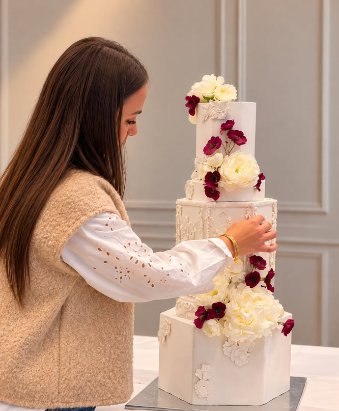

UN GÂTEAU.À VOTRE IMAGE.
Le gâteau entre en scène…
LE PRÉSENTOIR
PAS DEUX
PAREILS.
Une forme, une couleur, une envie.
C’est souvent comme ça que tout commence.
Quelques fêtes passées par l’atelier.

Dans l’atelier, à Aurillac.
UNE PÂTISSIÈRE, UN UNIVERS
ET DERRIÈRE,
IL Y A EMMA.
Je dessine des gâteaux, mais d’abord, je vous écoute.
Votre fête, vos goûts, cette photo que vous avez gardée de côté. C’est notre point de départ. Ensuite, je travaille les formes, les saveurs et chaque détail, à la main, dans mon atelier.
Racontez-moi votre idéeL’ATELIER DES SAVEURS
TROUVEZ VOTRE ACCORD.
Touchez le biscuit, le cœur ou la crème.
Choisissez un parfum, le gâteau se transforme.
On dresse votre gâteau…
L’aperçu 3D n’est pas disponible dans ce navigateur. Vos choix restent disponibles.
LE BISCUIT
VOTRE GÂTEAU COMMENCE ICI
PARLONS DE
VOTRE GÂTEAU.
Votre date, vos envies, les saveurs qui vous font craquer. Racontez-moi ce que vous avez en tête : on dessine la suite ensemble.
À Aurillac et dans un rayon de 20 km.
Livraison et installation à convenir ensemble.
01À partir de combien de personnes ?
Je réalise les gâteaux sur mesure à partir de 15 personnes.
02Comment passer commande ?
Choisissez vos saveurs plus haut et préparez votre demande. Envoyez-la sur Instagram : nous échangeons sur votre idée, puis je vous prépare un devis personnalisé.
03Combien de temps à l’avance ?
Écrivez-moi avec votre date et votre idée. Je vous confirme mes disponibilités et le délai adapté à votre projet.
04Et pour la livraison ?
Je livre à Aurillac et dans un rayon de 20 km. Nous précisons ensemble les modalités de livraison et d’installation pour votre réception.
05Une allergie, un régime particulier ?
Parlons-en dès le premier échange. Je vous confirme les adaptations possibles avant toute commande.